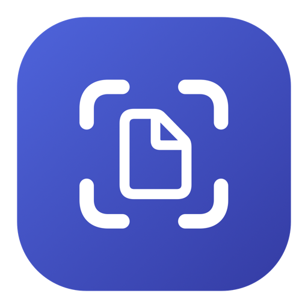
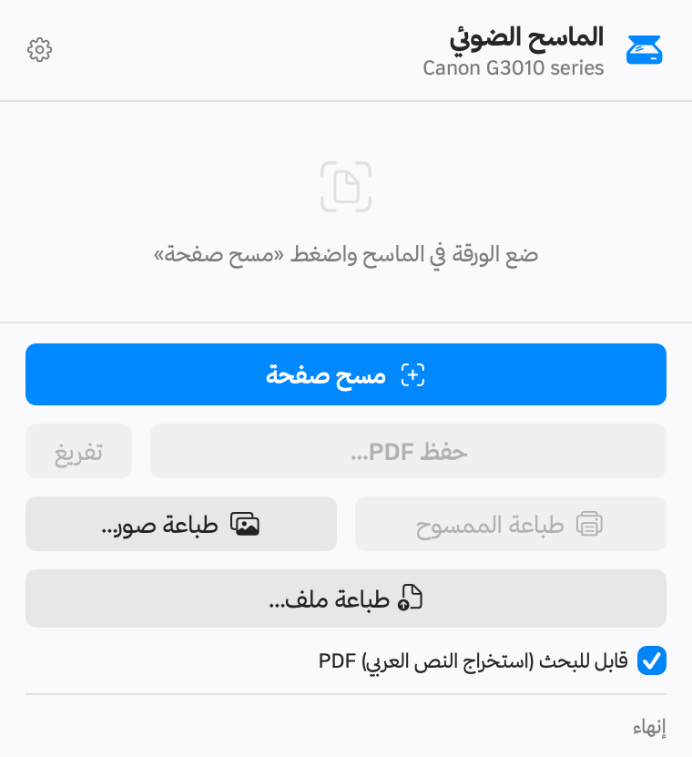

شغّل الماسح الضوئي في طابعة Canon PIXMA من الماك — بدون برامج كانون.
كانون لا توفّر تعريف ماسح ضوئي لنظام macOS، فتبقى الطابعة تطبع ولا تمسح. هذا التطبيق يحل المشكلة.
macOS 14 فأحدث · معالج Apple Silicon · مفتوح المصدر برخصة MIT

يسكن في شريط القوائم، ويفتح بضغطة واحدة.
امسح ورقة بعد ورقة وتُجمع كلها في ملف PDF واحد، مع معاينة كل صفحة وتدويرها أو حذفها قبل الحفظ.
استخراج النص العربي من الورقة الممسوحة عبر محرك التعرّف الضوئي المدمج في macOS، فتقدر تبحث داخل الملف وتنسخ منه.
مسح ثم طباعة مباشرة، فتتحول الطابعة إلى آلة تصوير. وتقدر تطبع أي ملف PDF أو صورة من جهازك.
تصفّح صور الماك داخل التطبيق واختر ما تريد طباعته، بلا تصدير ولا حفظ مؤقت.
صورتان أو ٤ أو ٦ أو ٩ في الصفحة، وورقة صور شخصية بمقاس ٤×٦ سم أو ٣٥×٤٥ مم مع خطوط قص.
نوع الورق والجودة والمقاس والطباعة بلا حدود — مقروءة من ملف تعريف طابعتك ومعروضة بالعربية.
طابور مباشر يعرض المهمة قيد الطباعة وما ينتظر دوره، مع إمكانية إلغاء أي مهمة.
كل شيء يحدث على جهازك وشبكتك المحلية. لا حسابات، لا تتبّع، ولا بيانات تغادر جهازك.
أقل من دقيقة.
لم يظهر طلب الإذن؟ فعّله يدوياً من إعدادات النظام ← الخصوصية والأمان ← الشبكة المحلية، ثم فعّل «الماسح».
المسح الضوئي يعمل مع طابعات Canon PIXMA G-series. أما الطباعة فتعمل مع أي طابعة مضافة في الماك.
| الطابعة | حالة المسح الضوئي |
|---|---|
| Canon PIXMA G3010 | مختبرة ✓ |
| Canon PIXMA G2010 · G2020 · G3020 · G4010 | غالباً تعمل — نفس البروتوكول، غير مختبرة |
| بقية سلسلة Canon PIXMA G | محتملة |
| طابعات كانون التي تدعم eSCL | لا تحتاج التطبيق — الماك يراها أصلاً |
| العلامات الأخرى | المسح لا يعمل · الطباعة تعمل |
الشرط التقني: أن تُعلن الطابعة خدمة _ipp._tcp مع الخاصية Scan=T، وأن تتكلم بروتوكول CHMP على المنفذ 80.
ماك يتحدث إلى الماسحات الضوئية ببروتوكول قياسي اسمه eSCL، وطابعات
Canon PIXMA G-series لا تفهمه. هي تستخدم بروتوكول كانون الخاص CHMP،
وكانون لم تُصدر له تعريفاً لنظام macOS. لذلك لا يظهر الماسح في «التقاط الصور» إطلاقاً.
مشروع pixma-rs فكّ هذا البروتوكول
بالهندسة العكسية، وهذا التطبيق يبني فوقه واجهة عربية كاملة للمسح والطباعة.